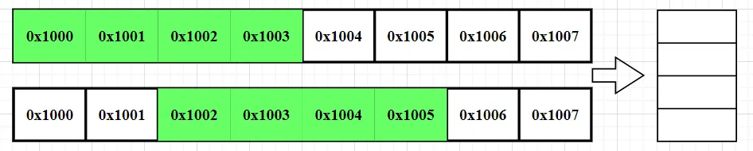

# 前言
本篇文章梳理内存对齐的相关概念和知识，并借上一篇文章《【Gemm】Gemm 计算加速》 来简单探讨一下内存排布对计算加速的重要作用。
本篇文章参考和引用了 《nihui 大佬的 ncnn 工程》，《ncnn 初探二：图解 ncnn::Mat 的内存排布》，关于 mat 中 data 的内存排列问题，《Linux 内核：内存管理 —— 内存对齐》等，并询问过大语言模型通义千问、文心一言等。如有不清楚的地方可以点击链接查阅。
作为初学者，错误在所难免，还望不吝赐教。
# 处理器的对齐访问
对齐访问的定义：对齐访问是指处理器在访问内存时，要求访问的起始地址是某个特定数值（通常是 2 的幂）的整数倍。这种对齐方式有助于简化内存访问的电路设计和提高访问效率。
例如某处理器读取 int 类型数据时，内存读取粒度为 4，只能从 0x10000， 0x10004 这种 4 的整数倍地址为起始地址读取内存。当该 int 类型数据恰好存储在这样的地址时，称为自然对齐。
那么，处理器只能进行对齐访问吗？大语言模型给出这样解答：
一、处理器在访问内存时，并不总是只能进行对齐访问，这取决于处理器的具体架构和设计。
1.某些处理器要求对齐访问：
例如，一些ARM架构的处理器在访问内存时要求对齐。如果访问的起始地址不满足对齐要求，处理器可能会产生异常或错误。
2.复杂指令集处理器（如x86架构）的灵活性：
x86架构的处理器通常能够处理非对齐的内存访问。虽然它们可能不是一次性读出所需的数据，而是采取多次读取对齐的内存并进行数据拼接的方式来实现非对齐数据访问，但这仍然表明x86处理器在处理非对齐访问方面具有一定的灵活性。
二、处理器单次访问的对齐要求
为了保持硬件设计的简单性和高效性，单次内存访问确实要求是对齐的。这是因为对齐访问可以确保数据在内存中的布局与处理器的数据路径相匹配，从而避免额外的处理步骤和性能损失。
从上面来看，处理器单次内存访问是要求对齐访问的，所谓支持的非对齐访问也是由多次对齐访问，再加上舍弃和拼接实现的。
# 内存对齐
内存对齐：如果一个变量的内存地址刚好位于它本身长度的整数倍，他就被称做自然对齐。
这里比较一下内存对齐 和 内存没有对齐的情况下， 处理器内存访问效率。

假设现在需要将四个字节的 float 数据搬到寄存器，上图的 float 数据自然对齐，位于 0x1000，那么将该 float 数据搬到寄存器只需要访问一次内存。
下图 float 数据没有自然对齐，位于 0x1002，那么需要将 0x1000 到 0x1003 的数据取出，留下 0x1002 到 0x1003 两个字节。再将 0x1004 到 0x1007 的数据取出，留下 0x1004 到 0x1005 两个字节，最终拼成需要的 float 数据。
在没有自然对齐的情况下，需要两次内存访问，还要消耗数据拼接等指令的时间。
# 编译器内存对齐
为实现高效的内存访问，编译器有一套内存对齐的规则。
例如下面的代码，在 64 位系统中，char 类型占 1 个字节，double 类型占 8 个字节。但是下面的结构体占用内存并不是 9 个字节，而是 16 个字节。
#include<stdio.h> | |
typedef struct{ | |
char a; | |
double ff; | |
} struct_elem; | |
int main(){ | |
struct_elem sclass; | |
printf("%d\n",(int)sizeof(struct_elem)); | |
printf("addr_char:%p addr_double:%p \n", &sclass.a, &sclass.ff); | |
return 0; | |
} |
16
addr_char:0x7ffc631cdd70 addr_double:0x7ffc631cdd78
打印结果如上所示，char 数据的地址是 0x7ffc631cdd70 ，为了让 double 数据也能自然对齐，char 数据后面空出来 7 个字节，直到第 8 个字节，也就是 0x7ffc631cdd78 才开始存储 double。
那么，如果将上述结构体中的 char 和 double 数据调换一下位置，是不是结构体的内存占用就变成 9 字节了呢？也不是，仍然是 16 字节。这就设计到下面的结构体内存分配规则了，这里不做讨论。
1.第一个成员在结构体变量偏移量为0 的地址处，也就是第一个成员必须从头开始。
2.以后每个成员相对于结构体首地址的 offset 都是该成员大小的整数倍，如有需要编译器会在成员之间加上填充字节。
3.结构体的总大小为 最大对齐数的整数倍（每个成员变量都有自己的对齐数），如有需要编译器会在最末一个成员之后加上填充字节。
4.如果嵌套结构体，嵌套的结构体对齐到自己的最大对齐数的整数倍处，结构体的整体大小就是所有最大对齐数（包含嵌套结构体的对齐数）的整数倍。
# ncnn 内存对齐
既然编译器帮助我们实现了内存对齐，程序员是不是就不需要再关注内存对齐了呢？
肯定是不行的，编译器只保证了基本自然对齐，在高性能计算、图形处理等方面，还需要程序员手动内存对齐。这里学习一下 NCNN 工程的矩阵排布方式：
下面是 ncnn 源码中构建三维矩阵（c,h,w），也就是通道、高度、宽度三个维度，的内存开辟函数。
变量的意义，来自《ncnn 初探二：图解 ncnn::Mat 的内存排布》
data: 表示Mat分配的内存的头地址, 是一个指针类型
refcount: 表示Mat的引用计数, 是一个指针类型
allocator: 本章我们不太关系这个变量可以认为它的值始终为0, 是一个指针类型
dims: 表示数据的维度, 是一个整数类型
w: 表示数据的width, 是一个整数类型
h: 表示数据的height, 是一个整数类型
c: 表示数据的channel, 是一个整数类型
elempack: 表示有多少个数据打包在一起, 是一个整数类型
elemsize: 表示打包在一起的数据占的字节数, 是一个整数类型
cstep: 表示channel step, 即走一个channel跨过的元素个数, 是一个整数类型
// 创建 三维矩阵（c,h,w） | |
void Mat::create(int _w, int _h, int _c, size_t _elemsize, Allocator* _allocator) | |
{ | |
if (dims == 3 && w == _w && h == _h && c == _c && elemsize == _elemsize && elempack == 1 && allocator == _allocator) | |
return; | |
release(); | |
elemsize = _elemsize; | |
elempack = 1; | |
allocator = _allocator; | |
dims = 3; | |
w = _w; | |
h = _h; | |
d = 1; | |
c = _c; | |
cstep = alignSize((size_t)w * h * elemsize, 16) / elemsize; //w*h 16 字节对齐 | |
size_t totalsize = alignSize(total() * elemsize, 4); //c*cstep 4 字节对齐 | |
if (totalsize > 0) | |
{ | |
if (allocator) | |
data = allocator->fastMalloc(totalsize + (int)sizeof(*refcount)); | |
else | |
data = fastMalloc(totalsize + (int)sizeof(*refcount)); | |
} | |
if (data){ | |
refcount = (int*)(((unsigned char*)data) + totalsize); // 连接计数器，放在了 data 最后 | |
*refcount = 1; | |
} | |
} |
再看一下 alignSize 函数：其用于返回不小于 sz 的 n 的最小倍数。
static int alignSize(int sz, int n){ | |
return (sz + n - 1) & -n; | |
} |
那么上述创建 三维矩阵（c,h,w）
我们以（c,h,w）：（4,2,3）为例，通道为 4，高为 2，宽为 3，开辟的内存及数据存放如下图所示：
0 1 2 3 4 5 6 7
c0h0w0 c0h0w1 c0h0w2 c0h1w0 c0h1w1 c0h1w2 pad pad
c1h0w0 c1h0w1 c1h0w2 c1h1w0 c1h1w1 c1h1w2 pad pad
c2h0w0 c2h0w1 c2h0w2 c2h1w0 c2h1w1 c2h1w2 pad pad
c3h0w0 c3h0w1 c3h0w2 c3h1w0 c3h1w1 c3h1w2 pad pad
高乘宽 hw，长度为 6， alignSize((size_t)w * h * elemsize, 16) / elemsize; 按照 16 字节对齐，会分配 8 个元素的空间，当前 hw 只占了六个元素的空间，其余两个空间 pad 补零。 cstep 为 8，而不是 6。
访问：
mat.data -> address of c0h0w0
mat.row(1) -> address of c0h1w0
mat.channel(0).row(1) -> address of c0h1w0
mat.channel(1).row(1) -> address of c1h1w0
所以 ncnn 的 16 字节对齐是每个通道 16 字节对齐。
访问每一个通道时，mat.channel (0)，所有 16 字节的数据，也就是 128bit 数据，能够一次内存访问加载到 SSE2 等 128 位寄存器中。
采用 16 字节对齐有哪些优势呢？大语言模型的回答：
- 提高数据访问效率
- SIMD 指令集优化：现代 CPU 支持单指令多数据（SIMD）指令集，如 SSE、AVX 等。这些指令可以在一个周期内处理多个数据点，但要求操作数在内存中是连续且对齐的。16 字节对齐确保了当使用 128 位宽的 SIMD 寄存器（例如 SSE 指令）时，数据可以直接加载到寄存器中而无需额外调整，从而提高了指令执行速度。
- 缓存行利用：大多数 CPU 的缓存行大小为 64 字节或更大，16 字节对齐有助于更好地匹配缓存行边界，减少缓存未命中率，进而提升内存访问效率。
- 减少内存访问延迟
- 避免跨页访问：如果数据跨越了不同的内存页面，操作系统需要额外的时间来处理页面错误和更新页表。通过保持 16 字节对齐，可以降低这种跨页访问的可能性，特别是在处理大量小型数据结构时。
# gemm 内存对齐的好处
以《【Gemm】Gemm 计算加速》 中的 《6. 使用 SIMD 指令》为例，如果矩阵 B（K*N）在宽度 N 方向进行 16 字节对齐（将 N pad 到 16 字节的倍数），那么算法最内存循环中的 __m128 b_reg = _mm_loadu_ps(&B(p, 0)); ，将会避免非对齐访问问题，在任何情况下读取的 16 字节数据都是自然对齐的。同时也避免了算法在矩阵 B 中的越界问题。

#include <stdio.h> | |
#include <emmintrin.h> // SSE2 | |
#define A(i,j) a[ (i)*lda + (j) ] | |
#define B(i,j) b[ (i)*ldb + (j) ] | |
#define C(i,j) c[ (i)*ldc + (j) ] | |
/* Routine for computing C = A * B + C */ | |
void AddDot4x4_SSE2(int k, float *a, int lda, float *b, int ldb, float *c, int ldc){ | |
/* Point to the current elements in the four rows of A */ | |
float *a_0p_pntr = &A(0, 0); | |
float *a_1p_pntr = &A(1, 0); | |
float *a_2p_pntr = &A(2, 0); | |
float *a_3p_pntr = &A(3, 0); | |
__m128 c_p0_sum = _mm_setzero_ps(); | |
__m128 c_p1_sum = _mm_setzero_ps(); | |
__m128 c_p2_sum = _mm_setzero_ps(); | |
__m128 c_p3_sum = _mm_setzero_ps(); | |
register float a_0p_reg, a_1p_reg, a_2p_reg, a_3p_reg; | |
for (int p = 0; p < k; ++p) { | |
__m128 b_reg = _mm_loadu_ps(&B(p, 0)); // 没有 16 字节对齐的情况下，可能会出现非对齐访问 | |
a_0p_reg = *a_0p_pntr++; | |
a_1p_reg = *a_1p_pntr++; | |
a_2p_reg = *a_2p_pntr++; | |
a_3p_reg = *a_3p_pntr++; | |
__m128 a_0p_vec = _mm_set_ps1(a_0p_reg); | |
__m128 a_1p_vec = _mm_set_ps1(a_1p_reg); | |
__m128 a_2p_vec = _mm_set_ps1(a_2p_reg); | |
__m128 a_3p_vec = _mm_set_ps1(a_3p_reg); | |
c_p0_sum = _mm_add_ps(c_p0_sum, _mm_mul_ps(b_reg, a_0p_vec)); | |
c_p1_sum = _mm_add_ps(c_p1_sum, _mm_mul_ps(b_reg, a_1p_vec)); | |
c_p2_sum = _mm_add_ps(c_p2_sum, _mm_mul_ps(b_reg, a_2p_vec)); | |
c_p3_sum = _mm_add_ps(c_p3_sum, _mm_mul_ps(b_reg, a_3p_vec)); | |
} | |
float *c_pntr; | |
__m128 c_reg; | |
c_pntr = &C(0, 0); | |
c_reg = _mm_loadu_ps(c_pntr); | |
c_reg = _mm_add_ps(c_reg, c_p0_sum); | |
_mm_storeu_ps(c_pntr, c_reg); | |
c_pntr = &C(1, 0); | |
c_reg = _mm_loadu_ps(c_pntr); | |
c_reg = _mm_add_ps(c_reg, c_p1_sum); | |
_mm_storeu_ps(c_pntr, c_reg); | |
c_pntr = &C(2, 0); | |
c_reg = _mm_loadu_ps(c_pntr); | |
c_reg = _mm_add_ps(c_reg, c_p2_sum); | |
_mm_storeu_ps(c_pntr, c_reg); | |
c_pntr = &C(3, 0); | |
c_reg = _mm_loadu_ps(c_pntr); | |
c_reg = _mm_add_ps(c_reg, c_p3_sum); | |
_mm_storeu_ps(c_pntr, c_reg); | |
} | |
void MY_MMult_4x4_10(int m, int n, int k, float *a, int lda, float *b, int ldb, float *c, int ldc){ | |
int i, j; | |
for (j = 0; j < n; j += 4) { /* Loop over the columns of C, unrolled by 4 */ | |
for (i = 0; i < m; i += 4) { /* Loop over the rows of C */ | |
AddDot4x4_SSE2(k, &A(i, 0), lda, &B(0, j), ldb, &C(i, j), ldc); | |
} | |
} | |
} | |
void GemmAccelerateSimd(){ | |
int M = 16; | |
int K = 64; | |
int N = 16; | |
float* MatriA = (float*)malloc(sizeof(float)* M*K); | |
float* MatriB = (float*)malloc(sizeof(float)* K*N); | |
float* MatriC = (float*)malloc(sizeof(float)* M*N); | |
for(int index=0; index<M*K; index<M*K; index++){ | |
MatriA[index] = 1; | |
} | |
for(int index=0; index<K*N; index++){ | |
MatriB[index] = 1; | |
} | |
MY_MMult_4x4_10(M,N,K,MatriA,K,MatriB,N,MatriC,N); | |
} |
# 后记
本博客目前以及可预期的将来都不会支持评论功能。各位大侠如若有指教和问题，可以在我的 github 项目 或随便一个项目下提出 issue，或者知乎 私信，并指明哪一篇博客，我看到一定及时回复，感激不尽！